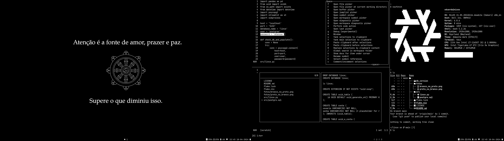

Home
My NixOS configuration - GitHub
Installation
# My NixOS Setup Process: For a NixOS explanation, go to something I wrote. ## Create Bootable USB: Go to the NixOS Download page, and select the ISO for the installer you preffer. When the download is finished: ```bash cat NixOS-iso-name-goes-here.iso > /dev/your-device-name (i.e. 'sda') ``` After that, just boot from the device. ## First boot (from usb): ```bash # After connecting to the internet, open the terminal and close the GUI installer. Pull install config files: sudo curl -L https://raw.githubusercontent.com/xaviduds/.nixos/main/disko.nix -o /tmp/disko.nix sudo curl -L https://raw.githubusercontent.com/xaviduds/.nixos/main/installation/flake.nix -o /tmp/flake.nix sudo curl -L https://raw.githubusercontent.com/xaviduds/.nixos/main/installation/configuration.nix -o /tmp/configuration.nix # Scheme: sudo nix --experimental-features "nix-command flakes" run github:nix-community/disko -- --mode disko /tmp/disko.nix --arg device '"/dev/nvme0n1"' sudo nixos-generate-config --no-filesystems --root /mnt # mv install config files to it`s place: sudo mv /tmp/*.nix /mnt/etc/nixos/ && sudo mv /mnt/etc/nixos /mnt/persist # Install: sudo nixos-install --root /mnt --flake /mnt/persist/nixos#default # Clone real repo to a persistent dir: sudo git clone https://github.com/xaviduds/.nixos.git /mnt/persist/.nixos # Temporarily remove unfree packages untill first real build at second boot: sudo mv /mnt/persist/.nixos/installation/home_second_boot.nix /mnt/persist/.nixos/home.nix && reboot ``` ## Second boot: ```bash # Wifi nmtui # or nmcli # mv config files to right location: sudo mv /persist/.nixos ~/ # Sometimes 'nixos-rebuild switch' bugs out on first disk boot, so I first build with 'boot'; hence the three boots; # Also good to test if Impermanence and Persistance are working correctly: sudo nixos-rebuild boot --flake ~/.nixos#nixos # Cleanup wifi info, sometimes it bugs if you maintain wifi files from before persistence, and reboot sudo rm -rf /persist/system/etc/NetworkManager/system-connections/* && reboot ``` ## Third boot: ```bash # Configure your GitHub SSH Key: ssh-keygen -t ed25519 -C 'xaviduds@gmail.com' && eval "$(ssh-agent -s)" && ssh-add ~/.ssh/id_ed25519 && cat ~/.ssh/id_ed25519.pub ``` ```bash # Then, after all the keys have been configured, clone the repos: git clone git@github.com:xaviduds/.nixos.git ~/.nixos git clone git@github.com:lince-social/lince.git ~/lince git clone git@github.com:xaviduds/xaviduds.github.io.git ~/.xaviduds.github.io git clone git@github.com:xaviduds/.personal_lince.git ~/.personal_lince ``` After that the finishing touches are: 1. Enabling the installed firefox extensions, loggin in GitHub, Whastsapp Web e Gmail.
Nix Basics
NixOS is a Linux distribution that uses Nix, the purely functional programming language, package manager and environment maker, to configure the system in a declarative way. To install NixOS you can follow the instructions at the official website. There's a graphical installer, that you can close when the booted environment loads to install through terminal (better).
With nixos, all your system configuration can be completely replicated with one or a few commmands. If you have an install script, the partitioning and configuration is merely a download of your config and an activation of your modules. To update and build the system, you'll need your config and one command. Rolling back to a previous generation can be done at boot. Keeping a limited number of them to not clutter the disk is also possibe.
My setup uses flakes with disko, impermanence (persistance too) and home-manager; it configures my channel to nixpkgs unstable. To understand more about these mutations and Nix/OS I recommend looking at the Nix Reference Manual, the NixOS Wiki and YouTube videos, following along.
Flakes
"Nix flakes provide a standard way to write Nix expressions (and therefore packages) whose dependencies are version-pinned in a lock file, improving reproducibility of Nix installations."Just like every snowflake is unique, so aren't nix flakes if you dont wan't them to be. They can be an exact copy of another person's flake.
Disko
"Disko is a utility and NixOS module for declarative disk partitioning."With a short command, your partition scheme will be set in accordance to your disko.nix.
Impermanence
"Impermanence in NixOS is where your root directory gets wiped every reboot (such as by mounting a tmpfs to /)."Impermanence, on the other hand, is another module that whipes your root on every reboot, with a catch. To keep useful files between sessions, you can use Persistance, part of Impermanence. Imagine that your floor is lava between reboots, anything that is not the explicitly declared directories or files, coated with anti-lava gel, is burned.
That is usefull when you want to have a system that never bloats. You always use te minimum amount of space, you know everything that your computer keeps in it's storage. There aren't random/unneeded files and packages lying around. You can install eveything your disk allows, test every package you want, and reboot to a fresh start.
Home Manager
"Home Manager is a system for managing a user environment using the Nix package manager."Home manager is awesome, it lets you declare your home configuration, using .nix to centralize all your packages configurations in a single file; be it colors on the terminal, starship icons, editor preferences, waybar, hyprland... and any directory or file in a symlink or explicit way inside home.nix.
If you search through the home.nix below, I believe you will find one or more programs/types of programs that you use daily.
Conclusion
NixOS is a powerfull tool, it lets you have from a minimal xfce experience to a highly configured and featureful one.
After a lot tweaking, a few generations of the NixOS config later, changing 100 lines here, one line there, a stable, reproducible system, with the biggest number of packages and fresh packages available is created.
Scripts
disko.nix
configuration.nix
flake.nix
home.nix
Packages per distro/channel